COURSE INFO
0. 課程資訊與教材
| 課程名稱 | 生成式AI應用電台・訂閱制第二季 第三堂 |
|---|
| 直播日期 | 2026/05/08（五）20:10 起，分上下兩個半場，錄影全長 2 小時 19 分（上半場 70 分 44 秒、下半場 67 分 57 秒） |
|---|
| 講師 | 益師傅（楊俊益・ECF 生成式AI應用電台） |
|---|
| 本堂主題 | ChatGPT 的圖像生成與分析框架提示詞：把提示詞參數化、把版型鎖進專案、用一句話換掉整張圖的風格 |
|---|
| 兩個半場 | 上半場偏圖像（16 格貼圖、七分格、專案設定、SWOT／DISC 圖表）；下半場偏圖表（心智圖寬幅、簡報縮頁、11 種圖表、個股分析與手機端操作） |
|---|
| 要先準備 | ChatGPT 帳號（免費即可，課堂有教怎麼多開）、Gemini 帳號、LM Arena（arena.ai，Google 註冊）；下半場的個股實作需要自己的看盤／下單 App |
|---|
📁 課程資料夾
老師把兩段錄影與 22 個教材檔（18 份 .txt 提示詞＋4 張範例圖）都放在課程方的雲端資料夾。那個資料夾是訂閱學員專屬的，本頁不放連結，取得方式請走原本的課程資料夾與課程群組公告。
🧾 18 份提示詞教材
課堂只來得及示範其中幾份，其餘是「回家自己試」。全部原文＋每份的一句話說明整理在另一頁。
🧾 開啟提示詞教材附錄頁（18 份原文，可直接複製）›
| 教材檔案 | 課堂上拿來做什麼 |
|---|
16個美食主題的Q版人物.txt | 第 2 章的起點。課堂上當場把「16 個美食主題」整句刪掉，改成參數。 |
7格 Q版貼圖-上傳資料摘要.txt
7格 真實人物版貼圖-上傳資料摘要.txt | 第 4、5、6 章的主角。全場出現最多次的一份提示詞。 |
ChatGPT 圖表修護.txt | 第 5 章的第二台機器：圖上生壞的中文字丟回去重生成。 |
SWOT分析.txt／PEST 分析.txt／DISC分析-new.txt／平衡計分卡.txt／波士頓分析-new.txt | 第 7 章：在尾巴加一句風格，四象限圖立刻變成可以貼進簡報的圖表。 |
說好的圖呢.txt | 第 8 章：AI 自己寫的原理說明，益師傅把它存下來當教材。 |
PlantUML mindmap 圖像語法.txt | 第 9、10 章：寬幅 3:1 心智圖的語法規範。 |
簡報縮圖製作.txt | 第 11 章：整份簡報排成一張縮頁總覽海報。 |
圖表圖像製作.txt | 第 12 章：11 種資訊圖表的選型與設計規範，全場最長的一份。 |
ChatGPT-Project 圖表分析.txt
台股深度分析系統（TWSE + FinMind 雙來源版）.txt | 第 13、14 章：個股分析資訊圖的版型，與它的資料抓取規則。 |
4 張 .png／.jpg 範例圖 | 放進 ChatGPT 專案的「資料來源」讓它學版型用的成品圖，不是提示詞。 |
🎬 課堂錄影
上半場：開場說明 → 16 格貼圖 → 免費帳號與 LM Arena → 七分格實作 → ChatGPT 專案與版型鎖定 → SWOT／DISC 圖表 →「說好的圖呢」。下半場：舊提示詞升級 → 寬幅心智圖 → 簡報縮頁 → 11 種圖表動態參數 → 個股分析與手機端操作 → 收尾。
🔧
錄影不放在這一頁，也不提供連結。兩段課堂錄影是課程方的教材，只在訂閱學員的課程資料夾裡；已訂閱的學員請自行前往原課程資料夾觀看。本頁只保留整理後的文字、截圖與時間軸。
🔒
本頁的截圖已裁掉線上教室的與會者名單與講師的個人帳號環境。原始錄影是 Teams 畫面分享，畫面上方是網址列與個人頭像、左側是講師釘選的 GPT 清單與帳號名稱、九宮格上有 24 位學員的真實姓名。整理成公開頁面時這四類一律裁除或整幀替換，逐字稿裡出現的學員暱稱也一併隱去。另外三類也做了遮蔽：課堂上當作素材的第三人肖像照片（含通訊社浮水印）、個股示範圖上的標的名稱與買賣結論、看盤畫面的股票名稱與報價。
1. 一張圖看懂這堂
這堂表面上示範了十幾種圖，真正在回答的只有一個問題：同一份提示詞，怎麼一直用下去？答案是三個可以疊加的動作，裝在同一個容器（ChatGPT 專案）裡。
整堂的主線：一份寫死的提示詞，經過「換參數 → 鎖版型 → 加風格」三次升級，裝進 ChatGPT 專案，就變成可以在手機上隨時叫用、每次產出都長得一樣的一台機器。
💡
如果只記得一句話，記這句：提示詞裡凡是「這一次才需要」的東西，都應該是參數；凡是「每一次都要一樣」的東西，都應該鎖進資料來源。［上半場 42:22］
2. 提示詞不求人：把寫死的主題整句刪掉
開場的第一個示範，用的是最多人做過的「16 格 Q 版貼圖」。他要講的不是這份提示詞，是怎麼改它。
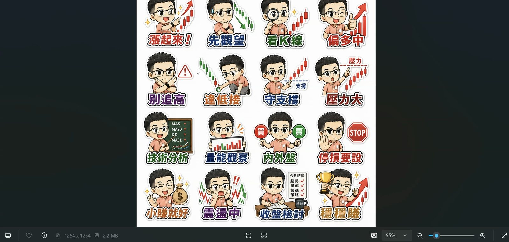
這是同一份提示詞換掉主題之後的成品：16 格股票版 Q 版貼圖。看每一格的文字——漲起來、先觀望、看K線、偏多中、別追高、逢低接、守支撐、壓力大、技術分析、量能觀察、內外盤、停損要設、小賺就好、震盪中、收盤檢討、穩穩賺。角色是同一個人、風格是同一套，換的只是主題那一段。［上半場 10:01］
原始教材 16個美食主題的Q版人物.txt 開頭是這樣寫的（逐字原文）：
請根據我目前這座標附近的16個美食主題 及 幫我把上傳人物圖像這個角色畫成Q版並且用 16個與主題或 根據上傳的檔案資料 相關動作和繁體中文文字及店家名稱 ,提供給我圖檔,我要做成LINE貼圖,保持白色背景像貼紙白邊的樣式
他當場做的事只有一件：把「我目前這座標附近的16個美食主題」整句刪掉。那一句是這份提示詞唯一寫死的地方，也是它只能做一次的原因。
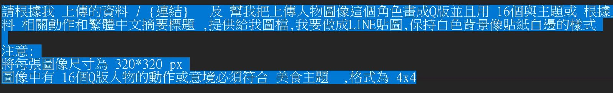
改完之後的樣子（反白處）。開頭變成「請根據我上傳的資料 ／ {連結}」，「16 個美食主題」不見了，換成「16 個與主題或根據上傳的檔案資料相關動作」。下面的「注意」段落原封不動——尺寸 320×320、4×4 格，這些是每次都一樣的規格，不需要動。［上半場 13:48］
兩個他順口教的寫法
- 斜線
/ 代表「或」——「上傳的資料 / 連結」＝ 兩種給法都收，不用寫兩句。
- 大括號
{ } 代表參數——「連結」如果要事後才給，就寫成 {連結}，AI 會知道那是待填欄位，會回過頭問你。
🔧
他把「摘要文字」改成「摘要標題」時說：「我都是臨時想的喔，我現在是目前臨時想的。」——本頁照原話保留這種即興感，因為那正是他要示範的：改提示詞不是查手冊，是熟到可以邊講邊改。
「所以你提示詞不求人。不求人的原因是，自己習慣去稍微改變一下這個提示詞的運用技巧。」
［上半場 11:40］這是整堂的定調句。他反覆說「大家都是用原本的貼詞改成自己的圖像，有點可惜」——拿到提示詞只會照抄，等於每次都要再去要一份新的。
上半場 13:30–22:00
3. 沒付費也要畫得到圖：加號別名與 LM Arena
他先問了全場兩個問題：沒付費訂閱 ChatGPT 的請按 1，有「只能畫三張圖」困擾的請按 4。兩題都很多人舉手，所以有了這一段。
方法一：Gmail 加號別名，一個信箱當十個帳號用
ChatGPT 註冊時不要用 Google 登入，改用 Email 註冊。把你原本的 Gmail 加上 +1、+2、+3，對 Google 信箱來說仍是同一個信箱，會收到驗證信，但對 ChatGPT 來說是不同帳號。
原本：yourname@gmail.com
註冊用：yourname+1@gmail.com
yourname+2@gmail.com
yourname+3@gmail.com
課堂上他是拿一組信箱當場示範，並在畫面上說「這個是假的帳號，不用寄給我」。本頁改成通用寫法，換成你自己的信箱即可。
- 在 ChatGPT 註冊頁選 用 Email 註冊，填加了
+N 的信箱。
- 回你原本的 Gmail 收驗證信，把驗證碼填回去，帳號就成立。
- 密碼全部設成一樣。他的原話：「不要為難自己。」
- 可以一次先把
+1 到 +10 都註冊好，這次的三張用完就換下一個。
⚠️
只有非 Google 自家的平台吃這一套。他明說：Google 自己的平台（Gmail、Gemini 那些）有把關機制，會幫你把加號導正回原信箱，這招在那邊行不通。另外原本信箱裡若已經有小數點，再加點是不行的——他當場示範時改掉了那個點。「十分鐘信箱」也會被擋。
方法二：LM Arena，免費一次五張
LM Arena（arena.ai）是台灣人在美國做的模型競技平台，新模型都要來這裡驗證。用 Google 註冊就能用。
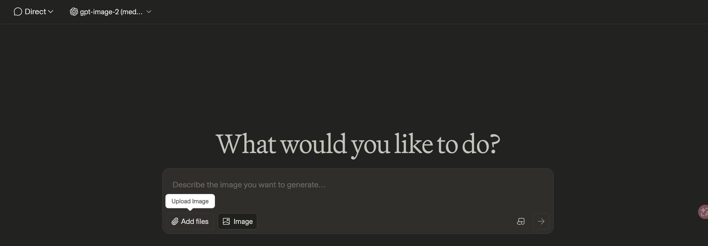
兩個下拉選單就是全部設定。左邊選 Direct（不要選 Battle，Battle 是兩個模型對打、比較慢也比較耗資源）；右邊選模型。要先把輸入區切到「Image」，右邊的模型清單才會出現。［上半場 22:24］
| 項目 | ChatGPT 免費版 | LM Arena |
|---|
| 一輪能畫幾張 | 3 張 | 5 張（一個模型） |
| 畫完要等多久 | 隔天或幾小時 | 約 5 小時；等不及可換 Nano Banana 2 再畫 5 張 |
| 可以餵什麼 | 檔案、圖片、連結都可以 | 只能餵圖片和外部連結，不能上傳文件檔 |
| 要找的模型 | — | gpt-image-2 (medium)，藏在清單很後面，要往下捲 |
💡
他特別提醒那個模型叫 gpt-image-2，不是 Qwen、也不是 Qwen 2.0，而且他選的是 medium 中型不是最高檔——「畫出來還是 OK，中文字還是清楚」。兩個平台交替使用，一天要畫的量大概就夠了。
4. 七分格實作：外部連結讀不到，就補一句主題名
全場出現最多次的一份提示詞是「七分格」——給它一份資料或一個連結，它先整理出 7 個重點，再畫成 1 個主視覺＋6 格漫畫的資訊圖。這一節他用 PChome 上一台筆電的商品頁當素材，從失敗做到成功。
先看清楚：那一大段「損失規避」不是要它畫的東西
七分格提示詞的中間有一大段很長的描述，講「為什麼我們更害怕失去」「沉沒成本」「湊免運費」。那是樣本（One-shot），是在示範格式長什麼樣，不是題目。他一開始丟給 LM Arena，AI 直接照著樣本畫了損失規避——這就是讀不到外部連結時最典型的失敗。
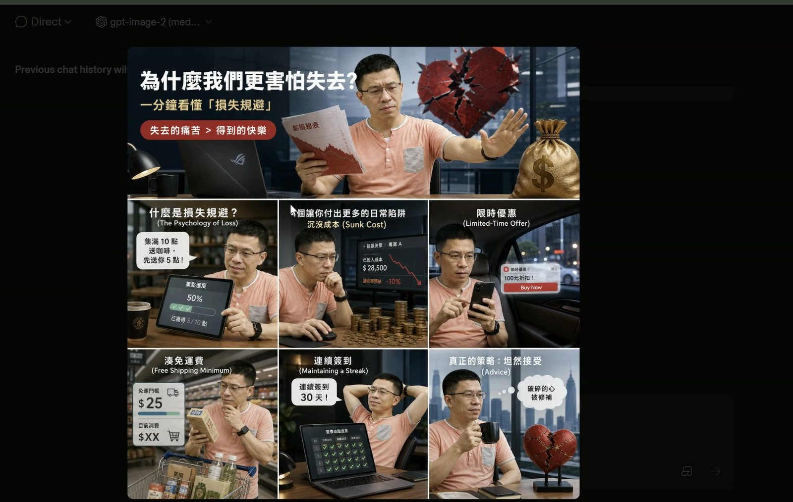
失敗長這樣。整張圖的版型、格數、色調都對，但主題錯了——它畫的是提示詞裡當範例用的「為什麼我們更害怕失去？損失規避」，完全沒讀到那個筆電連結。他當場的說法是：「他沒有抓到我要的資料……像他這個就沒有抓到，直接抓所謂損失規避的部分。」［上半場 28:32］
兩個修法
- 連結後面空一格，補上這個頁面的中文主題名。他的說法是「它就會緊緊的抓住這個主題，不會跑掉了」。例如貼財經網連結時，後面接一句這個財經網在講什麼。
- 已經畫錯了，就明確告訴它內容在哪裡。不要用「說好的圖呢」——它有畫圖，只是內容不對。要說「圖像的資料內容請參考」，再把連結給一次。
🔧
他對這一段講得很誠實：「假如你可以在 ChatGPT 裡頭完成，就不要來這個地方。因為對於外部連結的效果會比較差一點點。」LM Arena 的價值是免費額度，不是連結解析能力。
📌
課堂上開了一面 Padlet 作品牆讓大家貼成果。他當場說「我不會把這個東西公開在 FB，所以不用擔心，那就是我們自己用的」。本頁因此不放作品牆的畫面——上面有學員的真實姓名與暱稱。
5. ChatGPT 專案：把提示詞變成一台專門機器
前面三章都是「這一次怎麼做」。從這裡開始是「怎麼讓它以後每次都這樣做」。
建立一個專案，四個步驟
- 左側「專案」→ 新增專案，取名字（他取「七分格圖像製作」）→ 建立專案。
- 建好之後畫面上什麼都沒有，很多人卡在這裡。指令在右上角三個點 → 專案設定。
- 把提示詞貼進「指令」欄，按儲存。
- 儲存之後，下方才會出現「資料來源」——這一格是整堂的關鍵，見下一章。
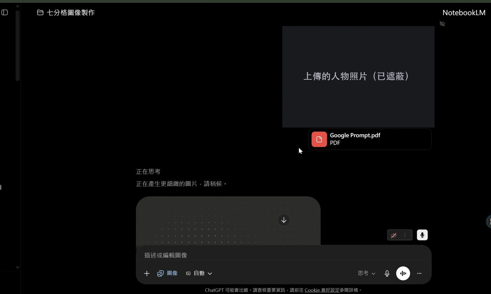
專案做好之後的用法：只要丟素材進去，不用再貼提示詞。這一次他丟的是一份 Google 提示詞白皮書 PDF（近 70 頁）加一張人物照。人物照是「這次的參數」所以直接丟對話框，版型範例才放進資料來源。他解釋原因：頭像每次都會換，與其鎖死不如當變數。［上半場 53:33］
第二台機器：圖像文字修護
同一套做法，他當場又開了第二個專案叫「圖像文字修復」，指令是教材 ChatGPT 圖表修護.txt（全場最短的一份，只有一段話）：
請將圖像的內容文字做調整 , 必須要根據的文字先進行辨識,儘可能用原字義來製作, 除非無法辨識再進行根據上下文重新製作出符合原字義的資料 ,文字有可能是幾個字 或是多列文字 ,不能自行新增不屬於範圍外的字,字體大小要與逐列的原本字體 一樣大小, 若有條列項目則要維持原本的條列項次,重新生成文字
- 用法：把中文字生壞的圖丟進去，記得選「創作圖像」，它會照原字義重生成那些字。
- 這個專案不需要資料來源——它修的是你當下丟的那張圖，沒有固定版型要學。
🔧
他自己先講了不保證成功：「但是我要先說明一下，不是百分之百。我試了那麼多次，剛好上一次研習失敗。」本頁照實記錄，沒有把這句剪掉。
💡
「專案」在別的平台叫別的名字，做法完全一樣：Gemini 叫 Gem、Claude 叫 Project、Perplexity 叫空間、Felo 叫主題集。他在最後一章把這件事講成了收尾金句。
6. 全堂最關鍵的一句：版型與風格必須與資料來源一致
人物一致性今年已經不難了，難的是版型與配色每次都不一樣。他花了整整十二分鐘，只為了教一句話。
做法是在原本的七分格提示詞最後面，加上這一句：
圖像版型與風格必須與資料來源中的檔案一致。
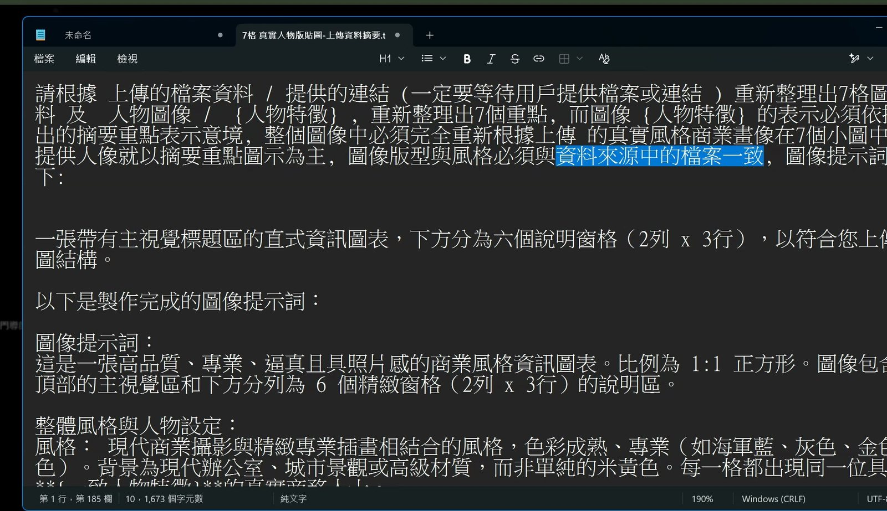
反白的那一段就是新加的。位置在提示詞的最後、送進專案設定之前。看清楚它加在哪裡——不是加在描述人物的那一段，是加在整份提示詞的尾巴，因為它管的是整張圖。［上半場 47:31］
它為什麼有效
寫了這句之後，這個專案每一次出圖都會回頭去對「資料來源」裡那張範例圖：同樣的配色、同樣的格線、同樣的字級關係。七分格從此定型。他把這件事叫做落地應用——因為職場上的東西本來就都有固定格式。
- 會議紀錄有固定格式 → 把公司的會議紀錄範本放進資料來源。
- 專案報告有固定格式 → 把報告範本放進去，它會去學摘要的分段方式。
- 簡報有固定風格 → 上一堂教過，它學得來。
💡
ChatGPT 的「資料來源」＝ Gemini Gem 的「相關資訊」。他把兩邊並排比對過，並給了一個誠實的評價：「Gemini 相關資訊的對齊的一致性比 ChatGPT 好。ChatGPT 有時候會忘記去參考它，偶爾啦。」但如果圖上有大量中文字（尤其是圖表），他建議還是回 ChatGPT 畫。
⚠️
ChatGPT 一次串接兩三個檔案時效果會掉。他的原話：「串接到兩三個檔案的時候，我覺得他效果真的輸給 Gemini。」所以他刻意只把「版型範例」放資料來源，人物照另外丟——不是懶，是在控制檔案數量。
「這個很重要喔，學起來真的是自己的啦，別人帶不走，這個絕招學起來真的是自己的。你可以用在職場上很多很多地方的運用，我沒有騙你。」
［上半場 52:00］講完版型鎖定之後說的。他前面才說「一般坦白講，大家比較少用這個功能，可是他確實蠻厲害」。
上半場 58:00–66:00
7. 分析框架也能好看：尾巴加一句風格
他在社團分享過很多張漂亮的分析圖表——DISC 人格特質、PEST、SWOT、平衡計分卡、波士頓分析。有人問「為什麼你畫出來的圖會像這樣子？」答案又是一句話。
圖像版型與風格: 3D皮克斯 + 麥肯錫專業圖表風
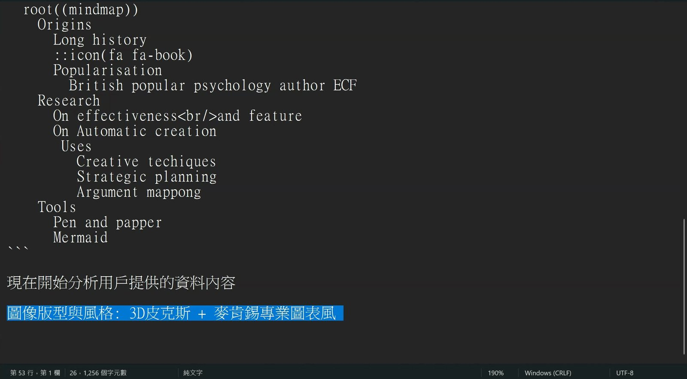
加的位置跟上一章一樣：整份提示詞的最後一行。上面那一大段是原本的 SWOT 或心智圖語法，一個字都沒改。［上半場 63:55］
沒加這句之前，這些提示詞的產出是 Mermaid 或 UML 語法畫出來的四象限圖——正確但乾。加了之後，同一份提示詞出來的是可以直接貼進簡報的資訊圖。
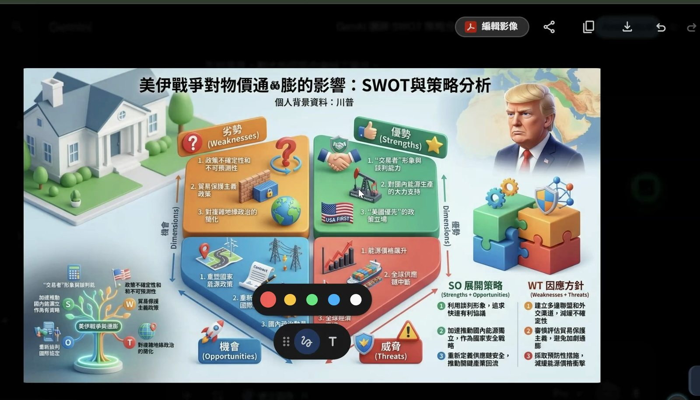
當場產出的成品。主題是他隨口給的「個人背景資料：川普／分析主題：美伊戰爭對於物價通膨的影響」。看四個象限的配置——優勢、劣勢、機會、威脅照 SWOT 標準位置擺，右下角還多了 SO 展開策略與 WT 因應方針兩欄，那是教材 SWOT分析.txt 的任務二要求的。風格變了，結構沒變。［上半場 68:15；這張成品是第 8 章示範「說好的圖呢」之後才畫出來的］
🔧
這一段的示範中途壞掉過。ChatGPT 一直畫不出來，他按 F5 重新整理，說「真的沒有，ChatGPT 掛掉了」，然後改用 Gemini Pro 重做。本頁照實記錄，沒有跳過也沒有假裝順利。
💡
「等待用戶輸入」型的提示詞（SWOT、DISC、波士頓那幾份）丟進去它會回過頭問你要分析誰、分析什麼。他示範時是直接送出、等它問、再補資料。也可以一開始就把參數寫進去。
8. 說好的圖呢？
上半場最後一個技巧，也是全場反應最大的一個。AI 明明被要求畫圖，卻只回了一堆文字——這時候不要重下「請畫圖」。
說好的圖呢？
他當場驗證：Gemini 回了一大段 SWOT 文字沒畫圖，他打上這四個字，畫面立刻顯示「正在創建圖片」，圖就出來了。他的形容是「來質疑他」。
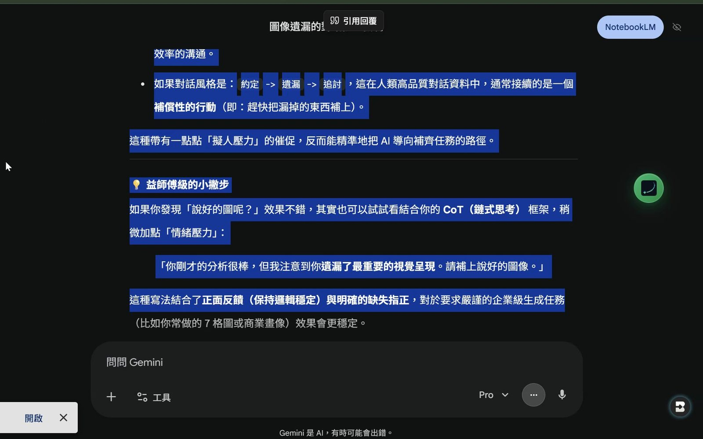
他不只用，還回頭去問 AI「為什麼這句有效」，把答案存成教材 說好的圖呢.txt。三個理由：強制觸發上下文回溯（要它回去檢查前一輪答應了什麼）、修正行為的權重高於執行指令（RLHF 訓練讓它極力避免不一致）、擬人化對話模式的補全（「約定→遺漏→追討」的下一句通常是補上）。［畫面出自上半場 42:42，這段內容他在 68:49 才展開講］
⚠️
什麼時候不能用這句。第 4 章那次失敗——它有畫圖，只是內容錯了。這時候說「說好的圖呢」沒有用，要明確指出內容應該參考哪裡。這句只對「該畫沒畫」有效。
💡
教材檔案最後一段還給了進階版，把正面回饋跟缺失指正綁在一起：「你剛才的分析很棒，但我注意到你遺漏了最重要的視覺呈現。請補上說好的圖像。」
「LLM 很不喜歡人家質疑他。質疑他的時候，他就會想盡辦法做好。」
［上半場 69:05］他補了一句這跟 NotebookLM 語音摘要裡「有質疑的時候，它其實會做得很棒」是同一件事。這是他的經驗判斷，不是官方說法，本頁照原話保留。
下半場 08:00–13:00
9. 舊提示詞不要丟，加一句話就全部活過來
下半場開場，他打開自己以前的提示詞庫——流程圖、雷達圖、時序圖、心智圖，累積了好幾年。他的做法不是重寫，是在每一份的最後加同一段話。
以上運用 3D皮克斯風格製作出 , 人物主題須符合 上傳的檔案資料 / {連結} 的特色
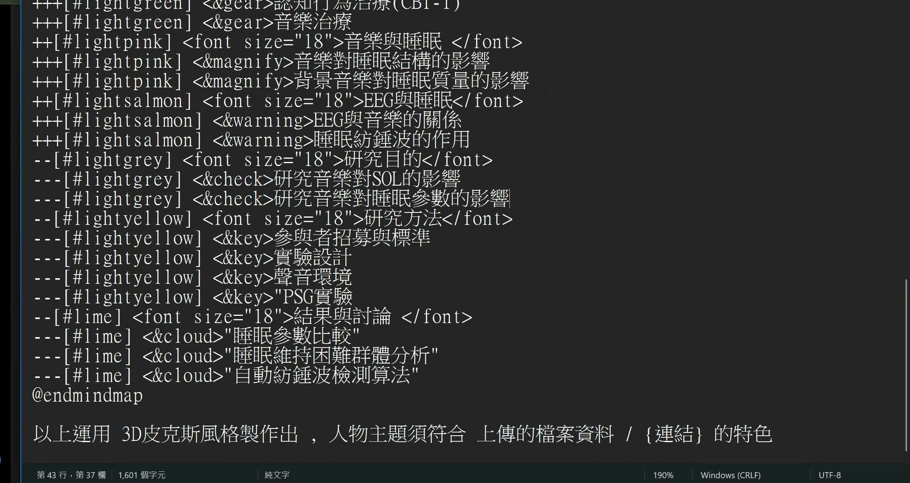
以 PlantUML mindmap 圖像語法.txt 為例。上面整段是完整的 PlantUML 語法範例（睡眠研究那份），@endmindmap 之後才是他加的那一行。語法一個字沒改，只在最後掛了一句風格。［下半場 12:16］
他對這件事的說法是「1 加 1 可以大於 2」：以前學的語法是骨架，現在的圖像模型是皮膚，兩個接起來就是別人沒有的東西。
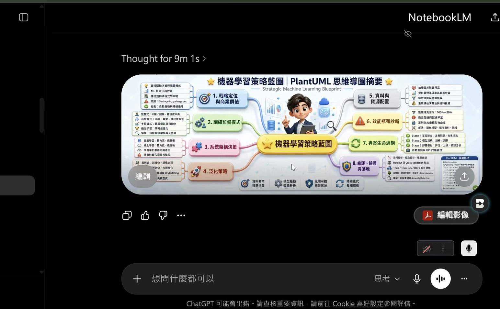
同一份 PlantUML 語法，加了那句之後產出的樣子。中心節點「機器學習策略藍圖」保持黃色（教材規定「中心點為 [#yellow] 不要改變」），六個分支各自一種淺色系，每個節點前面還有對應的小圖示——這些都是原本語法規定好的。3D 皮克斯風只換了質感，沒有動結構。［下半場 13:38］
💡
如果想讓圖裡出現特定人物，再補一句「人物主題請參考上傳的人物圖像檔案」，把 Q 版頭像丟進去就行。他說這叫「差異化的運用」：做簡報講解時，圖裡的人長得像自己，說服力不一樣。
「以前學的千萬不要放掉。」
［下半場 09:38］他一邊翻自己的提示詞庫一邊說的。前一句是「因為 ChatGPT 這麼強大了，我拿它來做成圖表不是很棒嗎」。
下半場 13:00–18:00
10. 寬幅 3:1：把心智圖變成一張橫幅
第二句可以掛在任何提示詞尾巴的話，管的是比例。心智圖天生會往左右展開，用 16:9 會擠，改成 3:1 就對了。
版型為寬幅 寬高比 3:1
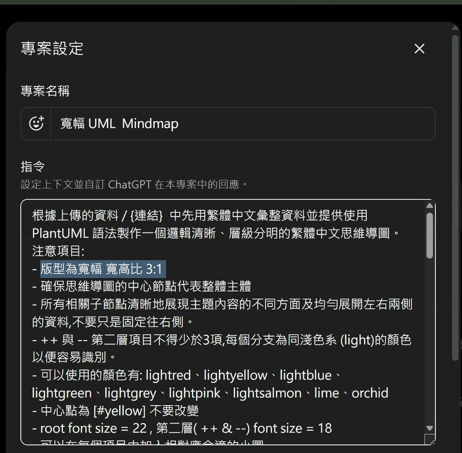
他把這句寫進專案「寬幅 UML Mindmap」的指令欄裡（反白那一行），而不是每次對話再講。下面接的都是教材原本的注意事項：中心節點代表整體主體、第二層不得少於 3 項、可用的淺色系顏色清單、root 字級 22、第二層字級 18。［下半場 14:54］
成品。同一台 ROG 筆電，這次不是七分格而是寬幅心智圖：中央放產品，左邊三支（設計定位、核心效能、顯示體驗）、右邊三支（連接與擴充、行動與續航、附加價值），左右均勻展開。他強調「左右兩側均勻展開，不要只是固定往右側」這條也是提示詞裡寫死的規格。［下半場 16:26］
💡
他順手給了一個延伸：比例改成 3:1 或 4:1 之後，效果很像長卷式的古畫。上一季發過的那組長卷與青銅器風格提示詞，把版型改成寬版就有完全不同的味道。想做橫幅 banner 也是同一招。
11. 簡報縮頁總覽：十頁簡報變一張圖
教材 簡報縮圖製作.txt 做的事很單純：把整份簡報的每一頁等比例縮小，排成一張總覽海報。它不重畫、不摘要，只是把原始畫面縮小重排。
- 把提示詞放進一個 ChatGPT 專案（他做成一個專門的「機器人」）。
- 丟一份 PDF 進去——他示範用的是 NotebookLM 產出的簡報下載成 PDF，共 10 頁。
- 等它做完，會得到一張直式的縮頁總覽海報。
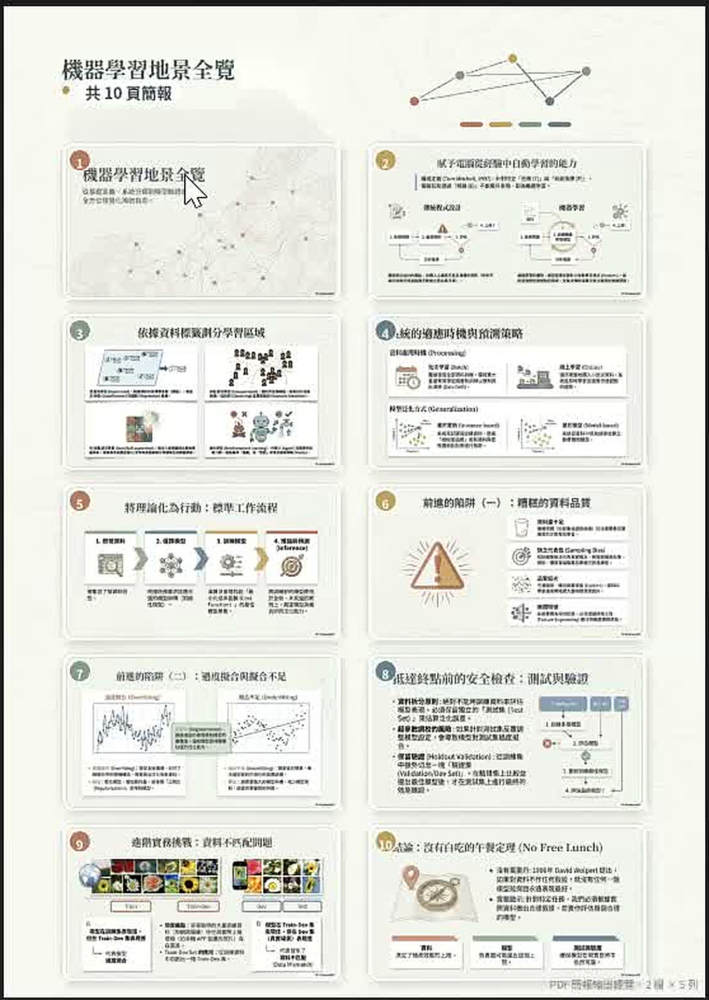
成品。上方是主視覺標題區，下面是 10 頁簡報的縮圖，2 欄 × 5 列——這個排法是教材裡寫死的規則（「5～8 頁：2 欄；9～12 頁：2 欄；13～20 頁：3 欄」）。每一格都保留原頁的版面、圖表位置與字級關係，沒有被重新設計。［下半場 20:10］
⚠️
它會多畫一個「渲染」標籤，要記得叫它去掉。他的原話：「他會寫簡報縮頁的渲染，其實這個有點——我根本不需要，我只需要那個名字。」這張圖就是加了「去除渲染」之後重出的版本。
💡
用途他舉的是講師場景：要印講義給學員時，用一張總覽頁代替一頁一頁印。預設是直幅，想要寬幅就跟它說改 16:9；頁數太多就分批餵，每次 10 到 12 頁。
12. 十一種圖表一個專案：什麼是動態參數
他把以前散落的圖表提示詞全部合併成一份 圖表圖像製作.txt，裡面定義了 11 種資訊圖表。這一節示範的不是這份提示詞本身，是怎麼在用的時候臨時加規格。
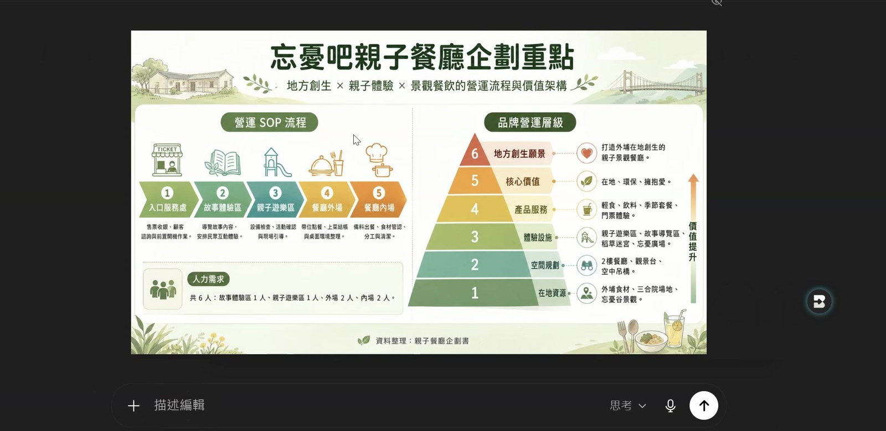
這張圖是這一節的重點。他故意刁難：「左側為線性流程圖，右側為金字塔層級圖」——看成品，左邊真的是五階段的營運 SOP 橫向流程，右邊真的是六層的品牌價值金字塔。原本的提示詞裡完全沒有「左側／右側」這種欄位，是他當場加上去的。［下半場 30:25］
動態參數：結構裡沒有的，也可以臨時給
圖表：金字塔層級圖（右側）+ 線性流程圖（左側）
同樣的做法還能加主角：提示詞結構裡本來沒有「主角」這個欄位，但你可以臨時寫「主角請根據上傳的 Q 版人物」，它就會把人物加進圖表裡。他把這件事叫做動態提示詞、動態參數。
💡
他舉了一個更極端的例子作對照：在 NotebookLM 裡，左邊來源明明是機器學習的決策樹，他只在主題欄寫「請用蛋黃酥比賽的部分來描述機器學習的概念」，AI 就把整張圖的結構換成做蛋黃酥的流程去講機器學習。動態參數的威力是可以覆寫原本的敘事框架，不只是填空。
🔧
教材
圖表圖像製作.txt 的 11 種圖表：花瓣圖、特徵列表圖、金字塔層級圖、線性流程圖、層級結構圖、扇形圖、垂直時間軸流程圖、概念隱喻圖、步驟流程圖、循環圖、階梯圖。它還寫了「使用者沒指定時依資料結構自動選」的判準，例如有先後順序就用線性流程圖、有反覆改善就用循環圖。全文在
提示詞附錄頁。
「常跟他們聊天。對！就是常跟他們聊天。嘗試錯誤吧。」
［下半場 27:51］有人問他為什麼知道可以這樣下指令。這是他給的全部答案，前面還先開玩笑吊了一次胃口。
「是一個提示詞的組合，就是一個文字接龍的概念。只是我先說後說，講清楚跟講不清楚，差別是這樣而已。當我講清楚的時候，它就有辦法可以做出來。」
［下半場 28:00］緊接著上一句。整堂十幾個技巧，說穿了就是這一句的不同版本。
下半場 32:00–36:00、47:00–51:00
13. 個股分析圖表：兩個多禮拜磨出來的版型
下半場的後半是這堂最花時間做出來的東西，也是最需要先講清楚界線的東西。
⚠️
這一節不是投資建議，本頁也不是。老師自己在提示詞最後寫了免責聲明，並在課堂上反覆說「我沒有推薦，不要說益師傅推薦」「我不喜歡擔那個責任」。這裡值得學的是提示詞怎麼寫，不是買什麼。他也說自己沒有分析師執照，「等我正式考上，可以來跟大家講得更詳細」。
它是怎麼長出來的
起點是他更早發過的 台股深度分析系統（TWSE + FinMind 雙來源版）.txt——那份是純資料分析，產出互動網頁。他把它改寫成「產出一張資訊圖」，前後改了兩個多禮拜。
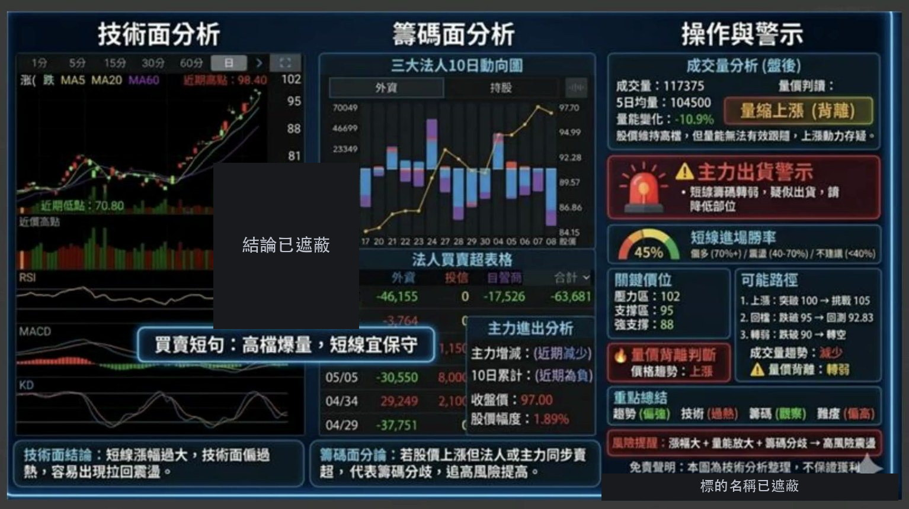
成品的版型：左欄技術面（日 K、MA5／MA20／MA60、成交量、RSI／MACD／KD），中欄籌碼面（三大法人 10 日動向、法人買賣超表格、主力進出），右欄操作與警示（成交量分析、主力出貨警示紅燈、短線進場勝率儀表、關鍵價位、可能路徑、重點總結）。中間那個超大的字就是結論，本頁已遮蔽；右下角的標的名稱同樣遮掉，只留版型。原圖右下角有一行免責聲明「本圖為技術分析整理，不保證獲利」。［下半場 50:20］
他花最多時間調的三件事
- 紅漲綠跌。「畢竟他是國外的平台」，模型預設是綠漲紅跌，所以提示詞裡到處都在強調顏色。教材裡買賣建議那一段直接寫「買 → 紅色（不可錯）／賣 → 綠色（不可錯）」。
- 那個超大的字要放在哪。「其實光要下這個字要花多少時間調整，你知道嗎？不是我們跟他講說買跟賣就可以了。我要跟他講要放在哪個地方。」
- 數字要對得起來。他會回頭核對成交量之類的數字跟原始截圖一不一樣。
🔧
AI 自己加了一個第三種結論。提示詞裡只寫了「買」跟「賣」，但當它判斷不出來的時候會自己寫「觀察」。他說「我裡頭提示詞並沒有寫觀察這兩個字，他竟然會主動給你觀察」——本頁照實記錄這個他自己也覺得意外的行為。
「不對的分析再好也沒有用，因為是錯誤的資料。」
［下半場 47:49］他解釋為什麼要一直回去驗證數字。這句也呼應教材 台股深度分析系統.txt 裡那條硬規則：兩個資料來源都抓不到就必須明講「無法抓取資料」，禁止使用任何模擬或捏造的數據。
下半場 36:00–47:00
14. 手機端才是主場：三張截圖出一張圖
這一節回答了一個前面留下的問題：為什麼一定要做成「專案」？因為專案在手機的 ChatGPT App 裡也叫得到，而看盤是在手機上發生的事。
- 在電腦上先把專案做好（指令貼進專案設定、儲存）。這一步不能在手機做。
- 打開手機 ChatGPT App，在輸入區旁邊點開，會看到專案選項，選你要的那一個。
- 切到你的看盤 App，截三張圖：①「詳細」頁的內外盤資料 ②「盤後分析」的三大法人 ③ 主力進出。技術線那張不要拉太窄，抓一個波段的標準畫面就好。
- 回 ChatGPT，記得選「創作圖像」，三張一起丟進去送出。
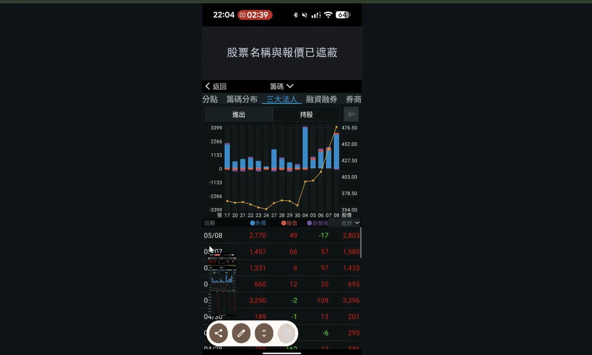
要截的第二張長這樣：三大法人的買賣超柱狀圖加股價折線。他說「你不要刻意把那個時間都截掉，ChatGPT 就很厲害，他不需要把這個東西給刪除掉，整個畫面給他就好了」——不用先整理素材，整個螢幕丟給它。本頁已遮蔽畫面上方的股票名稱與報價，只保留版面示意。［下半場 39:28］
✅
手機出圖比電腦快。這是他實測後的建議：「手機端真的出圖速度比較快，你可以比較看看，我沒有騙你。它圖的輸出真的遠比電腦來得快，我個人覺得啦，它真的快很多。」而且做成專案之後，人在哪裡都能用。
📌
他的選股工具沒有放進這一頁。課堂上示範的「釣魚神器」是他自製的付費工具，只提供給三季／年訂閱的學員。工具檔與工具網址不在可公開整理的範圍，raw 逐幀素材裡那幾格也已整幀移除。他提到的自用判準（看 30 日線漲幅、公司有沒有賺錢、三大法人與主力有沒有在買、有沒有題材）本頁只作紀錄，不構成建議。
15. 這堂課真正在教的事
一、提示詞裡寫死的那一句，就是它只能用一次的原因
「16 個美食主題」「這座標附近」——這種句子讀起來很具體，但它把提示詞綁死在一個場合。整堂十幾個示範，第一個動作永遠是把那一句找出來、刪掉、換成 {上傳的資料／連結}。找得到那一句，你就不用再跟人要提示詞了。
二、「每次都要一樣」的東西不該寫在提示詞裡，該放進資料來源
版型、配色、格線、字級關係，用文字描述永遠會漂。正確做法是把一張做對的成品放進 ChatGPT 專案的「資料來源」，再加一句「圖像版型與風格必須與資料來源中的檔案一致」。這是全堂唯一講了十二分鐘的一句話，也是職場落地的關鍵——你的會議紀錄、專案報告、簡報都有固定格式。
三、風格是一行字，不是重寫一份提示詞
「3D 皮克斯風＋麥肯錫專業圖表風」「版型為寬幅 寬高比 3:1」。掛在任何一份舊提示詞的最後面，結構一個字不用改，產出立刻不一樣。他幾年前寫的流程圖、雷達圖、心智圖語法就是這樣一次全部復活的——以前學的千萬不要放掉。
四、結構裡沒有的欄位，可以在用的時候臨時給
「左側金字塔層級圖、右側線性流程圖」「主角請根據上傳的 Q 版人物」——原本的提示詞完全沒有這些欄位，但它做得到。這叫動態參數。意思是提示詞不必寫到滴水不漏，寫好骨架，剩下的當場補。
五、這些都不是天分，是聊出來的
整堂最誠實的一段是有人問他「為什麼你都知道可以這樣下？」他的答案是「常跟他們聊天，嘗試錯誤吧」，以及「講清楚跟講不清楚，差別是這樣而已」。個股那張圖他改了兩個多禮拜，圖表修護他明說「不是百分之百」，SWOT 示範中途 ChatGPT 還掛掉一次。會用提示詞的人跟不會的人，差別不在句型，在願不願意試錯到它做對為止。
QUOTES
16. 老師金句
「今天不談程式。很多的運用技巧，我個人覺得啦，比較關鍵的是在於提示詞的運用技巧。」
［上半場 03:10］開場定調。這一堂從頭到尾沒有寫過一行程式。
「所以你提示詞不求人。不求人的原因是，自己習慣去稍微改變一下這個提示詞的運用技巧。」
［上半場 11:40］整堂的主線句。
「所以我才說，這不是與生俱來的能力，而是平常不斷不斷的去嘗試錯誤，練習出來的一個結果。」
［上半場 13:29］改完提示詞之後說的，前一句是「我都是臨時想的喔」。
「圖像版型與風格必須與資料來源中的檔案一致。」
［上半場 42:22］全堂最關鍵的一句提示詞。加在整份提示詞的最後面，貼進 ChatGPT 專案的指令欄。
「換句話說，注意聽喔，這叫落地應用。」
［上半場 43:08］緊接著他就問：你的會議紀錄有沒有固定格式？你的專案報告有沒有固定格式？有的話，就把它放進資料來源。
「這個很重要喔，學起來真的是自己的啦，別人帶不走，這個絕招學起來真的是自己的。」
［上半場 52:00］講完版型鎖定。他前面才說這個功能「大家比較少用，可是他確實蠻厲害」。
「LLM 很不喜歡人家質疑他。質疑他的時候，他就會想盡辦法做好。」
［上半場 69:05］解釋「說好的圖呢」為什麼有效。他強調這是他的感覺，不是官方說法。
「以前學的千萬不要放掉。」
［下半場 09:38］翻自己幾年前的提示詞庫時說的。加一句風格，全部復活。
「常跟他們聊天。對！就是常跟他們聊天。嘗試錯誤吧。」
［下半場 27:51］有人問他為什麼什麼都知道可以這樣下指令。這就是全部的答案。
「只是我先說後說，講清楚跟講不清楚，差別是這樣而已。當我講清楚的時候，它就有辦法可以做出來。」
［下半場 28:00］他對提示詞工程最精簡的一次定義。
「這就是所謂的動態提示詞，動態參數的運用。在我原本結構裡頭沒有，可是我可以臨時給了他。」
［下半場 29:05］示範完「左側金字塔、右側線性流程」之後。
「不對的分析再好也沒有用，因為是錯誤的資料。」
［下半場 47:49］解釋為什麼要一張一張回去核對數字。
「把你的專業抽走，你還剩什麼？你要記得，就是家人。你不要只為了專業而忽略了你的家人。」
［下半場 57:20］母親節前一天的收尾。他說南部研習再多天也每天往返回台北，因為「我很重視家人相處的感覺」。
「那只是不同的平台。學了一個，就等於每一個都會。」
［下半場 67:10］全堂最後一句技術性總結。ChatGPT 的 Project、Gemini 的 Gem、Claude 的 Project、Perplexity 的空間、Felo 的主題集，做法完全一樣。
17. 資料來源與整理說明
| 來源 | 2026/05/08 課堂錄影兩段（上半場 70 分 44 秒、下半場 67 分 57 秒，合計 2 小時 19 分）；課程資料夾 22 份檔案 |
|---|
| 整理方式 | 全程本機處理：場景偵測擷取 197 張關鍵畫面（上半場 107、下半場 90）、產生 1,365 段逐字稿（748＋617），再依逐字稿手寫章節目錄 |
|---|
| 時間戳 | 章節 chip 與引文後方的［上半場／下半場 mm:ss］對應該段錄影播放器的時間 |
|---|
| 整理 | 竹貞（Tarshar 的逐幀筆記專員） |
|---|
已知限制，請先看過再引用
- 逐字稿是機器產生的，人名與工具名會聽錯。可確定的錯字已修正（「易師傅／義師傅／醫師傅／一師傅」→益師傅，「缺GPT／去GPT／TrackGPT／TrayGPT／確GPT／CatGPT」→ChatGPT，「Germinite／Germanline／JAMIN NINE」→Gemini，「LN Arena」→LM Arena，「不靈通道」→布林通道，「新制圖」→心智圖，「腫染」→渲染，共 20 類、263 處，另把課堂上點到的學員暱稱改成〔學員〕）；不確定的一律保留原樣，沒有猜測補詞。
- 錄影中有數段語音辨識產生的重複幻覺（上半場 40 分處出現一長串英文亂碼、31–34 分連線中斷時出現「請問著⋯」重複數十次），整理時已整段捨棄，不會出現在本頁。
- 老師全場把 ChatGPT 的 Project 唸成「專案」、把 Gemini 的 Gem 唸成「券」（Gem 的台語式讀法），本頁一律寫成標準名稱 專案與 Gem，但沒有改動他對兩者差異的說法。
- 逐字稿中出現的學員暱稱、提問者稱呼、Padlet 作品牆上的貼文者姓名，本頁一律隱去。
- 課堂截圖已裁掉線上教室的與會者名單，以及畫面上方的網址列與個人頭像、左側的 ChatGPT／Gemini 帳號欄與釘選 GPT 清單、LM Arena 左下角的帳號 Email。整幀是會議介面或學員作品牆的畫面一張都沒有選。附錄的 raw 逐幀素材共 197 格，其中 38 格整幀替換成「此畫面已移除」說明圖，其餘 159 格逐張裁切；畫面文字是在裁切之後才重新辨識的，索引裡不會留下學員姓名。
- 第 13、14 章涉及個股，不是投資建議。老師本人在課堂上反覆聲明「我沒有推薦」，並在提示詞裡寫了免責聲明。本頁只整理提示詞與版型的做法，不轉述任何個股結論。
- 引用到作業、貼文或簡報之前，請對照錄影原始段落再確認一次。
🔒
錄影、課程資料夾與講師自製的付費選股工具都不放在這一頁，也不提供連結。兩段課堂錄影、18 份提示詞的原始檔與那支只給三季／年訂閱學員的選股工具，都是課程方的教材，取得方式請走原本的課程資料夾與課程群組公告。raw 逐幀素材裡的對應畫面已整幀替換成說明圖。
©️
版權與撤下聲明。本堂的提示詞與教材內容版權屬原作者（課程講師益師傅）；本頁是個人上課後的學習整理，未經原作者授權或背書，也不代表課程方立場。引用前請註明出處並尊重原作者。若原作者或課程方希望撤下，來信告知即刻移除。